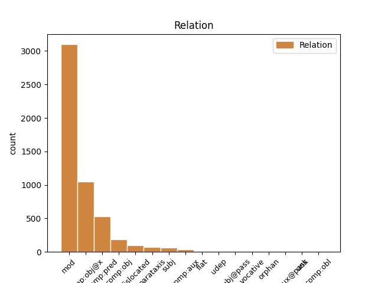
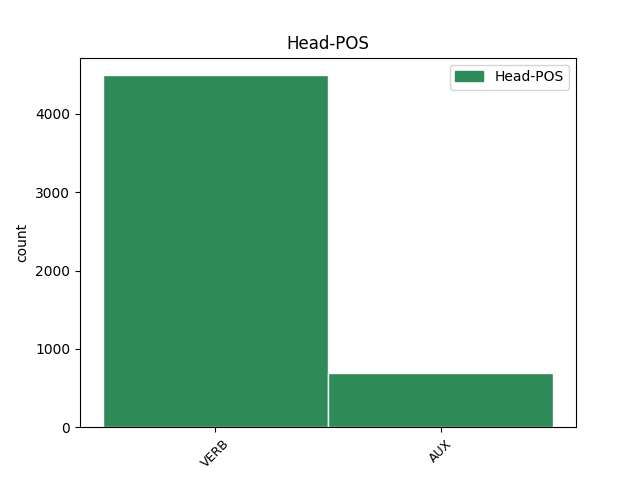
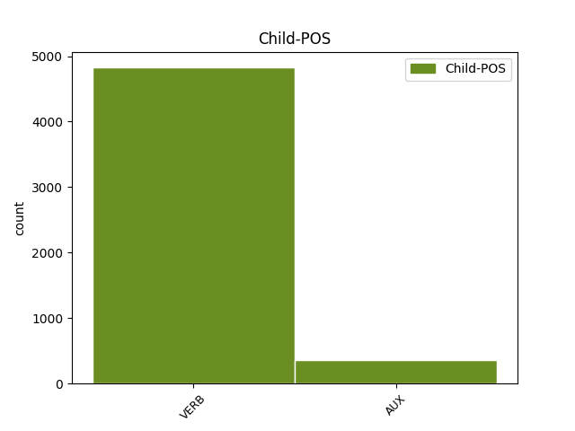

Distribution of features within this leaf



Agreement Rules sorted by frequency.
- When the dependent token is the modifer(mod) of the head token, and the dependent token is VERB.
1 худу _ _ _ _ 0 _ _ _
2 струю _ _ _ _ 0 _ _ _
3 имѣя _ _ _ _ 0 _ _ _
4 пожръши пожрѣти VERB V- Case=Nom|Gender=Fem|Number=Sing|Strength=Strong|Tense=Past|VerbForm=Part|Voice=Act 9 mod _ ref=197
5 чужи _ _ _ _ 0 _ _ _
6 ручьи _ _ _ _ 0 _ _ _
7 и _ _ _ _ 0 _ _ _
8 стругы _ _ _ _ 0 _ _ _
9 ростре рострѣти VERB V- Aspect=Perf|Mood=Ind|Number=Sing|Person=3|Tense=Past|VerbForm=Fin|Voice=Act 0 _ _ _
10 на _ _ _ _ 0 _ _ _
11 кусту _ _ _ _ 0 _ _ _
1 то _ _ _ _ 0 _ _ _
2 почнутъ почати VERB V- Mood=Ind|Number=Plur|Person=3|Tense=Pres|VerbForm=Fin|Voice=Act 0 _ _ _
3 наю _ _ _ _ 0 _ _ _
4 птици _ _ _ _ 0 _ _ _
5 бити бити VERB V- Tense=Pres|VerbForm=Inf|Voice=Act 2 comp:obj@x _ ref=208
6 въ _ _ _ _ 0 _ _ _
7 полѣ _ _ _ _ 0 _ _ _
8 Половецкомъ _ _ _ _ 0 _ _ _
1 Немизѣ _ _ _ _ 0 _ _ _
2 кровави _ _ _ _ 0 _ _ _
3 брезѣ _ _ _ _ 0 _ _ _
4 не _ _ _ _ 0 _ _ _
5 бологомъ _ _ _ _ 0 _ _ _
6 бяхуть быти AUX V- Aspect=Imp|Mood=Ind|Number=Plur|Person=3|Tense=Past|VerbForm=Fin|Voice=Act 0 _ _ _
7 посѣяни посѣяти VERB V- Case=Nom|Gender=Masc|Number=Plur|Strength=Strong|Tense=Past|VerbForm=Part|Voice=Pass 6 comp:pred _ ref=158
8 посѣяни _ _ _ _ 0 _ _ _
9 костьми _ _ _ _ 0 _ _ _
10 рускихъ _ _ _ _ 0 _ _ _
11 сыновъ _ _ _ _ 0 _ _ _
1 и _ _ _ _ 0 _ _ _
2 оуже _ _ _ _ 0 _ _ _
3 вечерꙋ _ _ _ _ 0 _ _ _
4 бывшꙋ быти AUX V- Case=Dat|Gender=Masc|Number=Sing|Strength=Strong|Tense=Past|VerbForm=Part|Voice=Act 6 mod _ ref=303v6
5 тоуркы _ _ _ _ 0 _ _ _
6 ѿстꙋпиша отъступити VERB V- Aspect=Perf|Mood=Ind|Number=Plur|Person=3|Tense=Past|VerbForm=Fin|Voice=Act 0 _ _ _
7 ѿ _ _ _ _ 0 _ _ _
8 града _ _ _ _ 0 _ _ _
1 а _ _ _ _ 0 _ _ _
2 ѣсть ясти VERB V- Mood=Ind|Number=Sing|Person=3|Tense=Pres|VerbForm=Fin|Voice=Act 0 _ _ _
3 что _ _ _ _ 0 _ _ _
4 можеть мощи VERB V- Mood=Ind|Number=Sing|Person=3|Tense=Pres|VerbForm=Fin|Voice=Act 2 comp:obj _ ref=97
1 Коли _ _ _ _ 0 _ _ _
2 Игорь _ _ _ _ 0 _ _ _
3 соколомъ _ _ _ _ 0 _ _ _
4 полетѣ полетѣти VERB V- Aspect=Perf|Mood=Ind|Number=Sing|Person=3|Tense=Past|VerbForm=Fin|Voice=Act 8 dislocated _ ref=191
5 тогда _ _ _ _ 0 _ _ _
6 Влуръ _ _ _ _ 0 _ _ _
7 влъкомъ _ _ _ _ 0 _ _ _
8 потече потещи VERB V- Aspect=Perf|Mood=Ind|Number=Sing|Person=3|Tense=Past|VerbForm=Fin|Voice=Act 0 _ _ _
9 труся _ _ _ _ 0 _ _ _
10 собою _ _ _ _ 0 _ _ _
11 студеную _ _ _ _ 0 _ _ _
12 росу _ _ _ _ 0 _ _ _
1 и _ _ _ _ 0 _ _ _
2 збыс събыти VERB V- Aspect=Perf|Mood=Ind|Number=Sing|Person=3|Tense=Past|VerbForm=Fin|Voice=Act 0 _ _ _
3 сѧ _ _ _ _ 0 _ _ _
4 реченʼное рещи VERB V- Case=Nom|Gender=Neut|Number=Sing|Strength=Weak|Tense=Past|VerbForm=Part|Voice=Pass 2 subj _ ref=316r9
5 конʼстѧнʼтиномъ _ _ _ _ 0 _ _ _
6 създа _ _ _ _ 0 _ _ _
7 сѧ _ _ _ _ 0 _ _ _
8 и _ _ _ _ 0 _ _ _
9 пакы _ _ _ _ 0 _ _ _
10 конʼстѧнʼтиномъ _ _ _ _ 0 _ _ _
11 сконʼча _ _ _ _ 0 _ _ _
12 с _ _ _ _ 0 _ _ _
13 зане _ _ _ _ 0 _ _ _
14 съгрѣшенїемъ _ _ _ _ 0 _ _ _
15 ѡставленїе _ _ _ _ 0 _ _ _
16 соудомъ _ _ _ _ 0 _ _ _
17 б҃жїимъ _ _ _ _ 0 _ _ _
18 временемъ _ _ _ _ 0 _ _ _
19 бывають _ _ _ _ 0 _ _ _
1 пощади _ _ _ _ 0 _ _ _
2 г҃и _ _ _ _ 0 _ _ _
3 пощади пощадѣти VERB V- Mood=Imp|Number=Sing|Person=2|Tense=Pres|VerbForm=Fin|Voice=Act 0 _ _ _
4 ихʼ _ _ _ _ 0 _ _ _
5 же _ _ _ _ 0 _ _ _
6 искꙋпилъ _ _ _ _ 0 _ _ _
7 еси быти AUX V- Mood=Ind|Number=Sing|Person=2|Tense=Pres|VerbForm=Fin|Voice=Act 3 comp:obj _ ref=307r1
8 животворною _ _ _ _ 0 _ _ _
9 кровїю _ _ _ _ 0 _ _ _
10 твоею _ _ _ _ 0 _ _ _
1 Си _ _ _ _ 0 _ _ _
2 ночь _ _ _ _ 0 _ _ _
3 съ _ _ _ _ 0 _ _ _
4 вечера _ _ _ _ 0 _ _ _
5 одѣвахуть одѣвати VERB V- Aspect=Imp|Mood=Ind|Number=Plur|Person=3|Tense=Past|VerbForm=Fin|Voice=Act 0 _ _ _
6 мя _ _ _ _ 0 _ _ _
7 рече рещи VERB V- Aspect=Perf|Mood=Ind|Number=Sing|Person=3|Tense=Past|VerbForm=Fin|Voice=Act 5 parataxis _ ref=94
8 чръною _ _ _ _ 0 _ _ _
9 паполомою _ _ _ _ 0 _ _ _
10 на _ _ _ _ 0 _ _ _
11 кроваты _ _ _ _ 0 _ _ _
12 тисовѣ _ _ _ _ 0 _ _ _
1 и _ _ _ _ 0 _ _ _
2 сѣчахꙋ _ _ _ _ 0 _ _ _
3 сѧ _ _ _ _ 0 _ _ _
4 с _ _ _ _ 0 _ _ _
5 ними _ _ _ _ 0 _ _ _
6 люто _ _ _ _ 0 _ _ _
7 ꙗко _ _ _ _ 0 _ _ _
8 ꙋдивити _ _ _ _ 0 _ _ _
9 сѧ _ _ _ _ 0 _ _ _
10 торком _ _ _ _ 0 _ _ _
11 и _ _ _ _ 0 _ _ _
12 не _ _ _ _ 0 _ _ _
13 надѣꙗти _ _ _ _ 0 _ _ _
14 сѧ _ _ _ _ 0 _ _ _
15 оуже _ _ _ _ 0 _ _ _
16 ихъ _ _ _ _ 0 _ _ _
17 чающе чаяти VERB V- Case=Nom|Gender=Masc|Number=Plur|Strength=Strong|Tense=Pres|VerbForm=Part|Voice=Act 0 _ _ _
18 оубьеныхъ _ _ _ _ 0 _ _ _
19 быти быти AUX V- Tense=Pres|VerbForm=Inf|Voice=Act 17 comp:obj@x _ ref=311r18
1 не _ _ _ _ 0 _ _ _
2 даи даяти VERB V- Mood=Imp|Number=Sing|Person=2|Tense=Pres|VerbForm=Fin|Voice=Act 0 _ _ _
3 же _ _ _ _ 0 _ _ _
4 достоꙗнїа _ _ _ _ 0 _ _ _
5 твоего _ _ _ _ 0 _ _ _
6 в _ _ _ _ 0 _ _ _
7 поношенїе _ _ _ _ 0 _ _ _
8 сыроꙗдцемъ _ _ _ _ 0 _ _ _
9 сим _ _ _ _ 0 _ _ _
10 да _ _ _ _ 0 _ _ _
11 не _ _ _ _ 0 _ _ _
12 рекꙋт _ _ _ _ 0 _ _ _
13 гдѣ _ _ _ _ 0 _ _ _
14 єс быти AUX V- Mood=Ind|Number=Sing|Person=3|Tense=Pres|VerbForm=Fin|Voice=Act 2 parataxis _ ref=308v15
15 б҃ъ _ _ _ _ 0 _ _ _
16 их _ _ _ _ 0 _ _ _
17 но _ _ _ _ 0 _ _ _
18 да _ _ _ _ 0 _ _ _
19 познають _ _ _ _ 0 _ _ _
20 ꙗко _ _ _ _ 0 _ _ _
21 ты _ _ _ _ 0 _ _ _
22 еси _ _ _ _ 0 _ _ _
23 б҃ъ _ _ _ _ 0 _ _ _
24 н҃шь _ _ _ _ 0 _ _ _
25 г҃ь _ _ _ _ 0 _ _ _
26 іѵ҃ _ _ _ _ 0 _ _ _
27 х҃с _ _ _ _ 0 _ _ _
28 въ _ _ _ _ 0 _ _ _
29 славꙋ _ _ _ _ 0 _ _ _
30 б҃оу _ _ _ _ 0 _ _ _
31 ѿц҃оу _ _ _ _ 0 _ _ _
1 ѥгда _ _ _ _ 0 _ _ _
2 ли _ _ _ _ 0 _ _ _
3 видите видѣти VERB V- Mood=Ind|Number=Plur|Person=2|Tense=Pres|VerbForm=Fin|Voice=Act 0 _ _ _
4 скѹдѣниѥ _ _ _ _ 0 _ _ _
5 сѹще быти AUX V- Case=Acc|Gender=Neut|Number=Sing|Strength=Strong|Tense=Pres|VerbForm=Part|Voice=Act 3 comp:pred _ ref=90
6 и _ _ _ _ 0 _ _ _
7 вьсѣмь _ _ _ _ 0 _ _ _
8 ѹмалѧюще _ _ _ _ 0 _ _ _
9 сѧ _ _ _ _ 0 _ _ _
10 тъгда _ _ _ _ 0 _ _ _
11 разѹмѣите _ _ _ _ 0 _ _ _
12 ꙗко _ _ _ _ 0 _ _ _
13 далече _ _ _ _ 0 _ _ _
14 ми _ _ _ _ 0 _ _ _
15 б҃а _ _ _ _ 0 _ _ _
16 быти _ _ _ _ 0 _ _ _
17 и _ _ _ _ 0 _ _ _
18 не _ _ _ _ 0 _ _ _
19 имѹща _ _ _ _ 0 _ _ _
20 дьрьзновениꙗ _ _ _ _ 0 _ _ _
21 молити _ _ _ _ 0 _ _ _
22 сѧ _ _ _ _ 0 _ _ _
23 къ _ _ _ _ 0 _ _ _
24 нѥмѹ _ _ _ _ 0 _ _ _
1 и _ _ _ _ 0 _ _ _
2 аще _ _ _ _ 0 _ _ _
3 не _ _ _ _ 0 _ _ _
4 бы _ _ _ _ 0 _ _ _
5 гсь _ _ _ _ 0 _ _ _
6 прекратил _ _ _ _ 0 _ _ _
7 д҃нь _ _ _ _ 0 _ _ _
8 тъ _ _ _ _ 0 _ _ _
9 то _ _ _ _ 0 _ _ _
10 и _ _ _ _ 0 _ _ _
11 конечнаѧ _ _ _ _ 0 _ _ _
12 бо _ _ _ _ 0 _ _ _
13 оуже _ _ _ _ 0 _ _ _
14 бѣ _ _ _ _ 0 _ _ _
15 погыбель _ _ _ _ 0 _ _ _
16 граду _ _ _ _ 0 _ _ _
17 понеже _ _ _ _ 0 _ _ _
18 гражане _ _ _ _ 0 _ _ _
19 вси _ _ _ _ 0 _ _ _
20 оуже _ _ _ _ 0 _ _ _
21 бѧхꙋ быти AUX V- Aspect=Imp|Mood=Ind|Number=Plur|Person=3|Tense=Past|VerbForm=Fin|Voice=Act 0 _ _ _
22 изнемогоша изнемощи VERB V- Aspect=Perf|Mood=Ind|Number=Plur|Person=3|Tense=Past|VerbForm=Fin|Voice=Act 21 comp:aux _ ref=295r7
1 утръ утръгнути VERB V- Aspect=Perf|Mood=Ind|Number=Sing|Person=3|Tense=Past|VerbForm=Fin|Voice=Act 0 _ _ _
2 же же VERB V- Aspect=Perf|Mood=Ind|Number=Sing|Person=3|Tense=Past|VerbForm=Fin|Voice=Act 1 flat _ ref=156
3 воззни _ _ _ _ 0 _ _ _
4 с _ _ _ _ 0 _ _ _
5 три _ _ _ _ 0 _ _ _
6 кусы _ _ _ _ 0 _ _ _
1 но _ _ _ _ 0 _ _ _
2 ꙋбо _ _ _ _ 0 _ _ _
3 елико _ _ _ _ 0 _ _ _
4 преже _ _ _ _ 0 _ _ _
5 блгдтеи _ _ _ _ 0 _ _ _
6 и _ _ _ _ 0 _ _ _
7 даровъ _ _ _ _ 0 _ _ _
8 божїихъ _ _ _ _ 0 _ _ _
9 и _ _ _ _ 0 _ _ _
10 прчстые _ _ _ _ 0 _ _ _
11 б҃гом҃тре _ _ _ _ 0 _ _ _
12 бл҃годѣꙗнїи _ _ _ _ 0 _ _ _
13 сподоблени _ _ _ _ 0 _ _ _
14 быхом быти AUX V- Aspect=Perf|Mood=Ind|Number=Plur|Person=1|Tense=Past|VerbForm=Fin|Voice=Act 25 dislocated _ ref=307r20
15 толико _ _ _ _ 0 _ _ _
16 н҃нѣ _ _ _ _ 0 _ _ _
17 грѣхъ _ _ _ _ 0 _ _ _
18 ради _ _ _ _ 0 _ _ _
19 н҃ших _ _ _ _ 0 _ _ _
20 помилованїа _ _ _ _ 0 _ _ _
21 и _ _ _ _ 0 _ _ _
22 щедротъ _ _ _ _ 0 _ _ _
23 б҃жїих _ _ _ _ 0 _ _ _
24 лишени _ _ _ _ 0 _ _ _
25 быхом быти AUX V- Aspect=Perf|Mood=Ind|Number=Plur|Person=1|Tense=Past|VerbForm=Fin|Voice=Act 0 _ _ _
1 се _ _ _ _ 0 _ _ _
2 бо _ _ _ _ 0 _ _ _
3 нѣколи _ _ _ _ 0 _ _ _
4 ꙗтомъ _ _ _ _ 0 _ _ _
5 бывъшемъ _ _ _ _ 0 _ _ _
6 мѹжемъ _ _ _ _ 0 _ _ _
7 разбои _ _ _ _ 0 _ _ _
8 творѧщемъ _ _ _ _ 0 _ _ _
9 ѿ _ _ _ _ 0 _ _ _
10 нѣкыихъ _ _ _ _ 0 _ _ _
11 стрѣгѹщиихъ _ _ _ _ 0 _ _ _
12 домѹ _ _ _ _ 0 _ _ _
13 своѥго _ _ _ _ 0 _ _ _
14 и _ _ _ _ 0 _ _ _
15 бысть быти AUX V- Aspect=Perf|Mood=Ind|Number=Sing|Person=3|Tense=Past|VerbForm=Fin|Voice=Act 0 _ _ _
16 съвѧзаномъ съвязати VERB V- Case=Dat|Gender=Masc|Number=Plur|Strength=Strong|Tense=Past|VerbForm=Part|Voice=Pass 15 comp:aux@pass _ ref=56
17 имъ _ _ _ _ 0 _ _ _
18 сѹщемъ _ _ _ _ 0 _ _ _
19 и _ _ _ _ 0 _ _ _
20 ведомомъ _ _ _ _ 0 _ _ _
21 въ _ _ _ _ 0 _ _ _
22 градъ _ _ _ _ 0 _ _ _
23 къ _ _ _ _ 0 _ _ _
24 сѹдии _ _ _ _ 0 _ _ _
25 и _ _ _ _ 0 _ _ _
26 се _ _ _ _ 0 _ _ _
27 по _ _ _ _ 0 _ _ _
28 изволѥнию _ _ _ _ 0 _ _ _
29 божию _ _ _ _ 0 _ _ _
30 сълѹчи _ _ _ _ 0 _ _ _
31 сѧ _ _ _ _ 0 _ _ _
32 имъ _ _ _ _ 0 _ _ _
33 миновати _ _ _ _ 0 _ _ _
34 мимо _ _ _ _ 0 _ _ _
35 ѥдино _ _ _ _ 0 _ _ _
36 село _ _ _ _ 0 _ _ _
37 манастырьскоѥ _ _ _ _ 0 _ _ _
1 и _ _ _ _ 0 _ _ _
2 уны _ _ _ _ 0 _ _ _
3 быхъ быти AUX V- Aspect=Perf|Mood=Ind|Number=Sing|Person=1|Tense=Past|VerbForm=Fin|Voice=Act 0 _ _ _
4 бы быти AUX V- Aspect=Perf|Mood=Ind|Number=Sing|Person=3|Tense=Past|VerbForm=Fin|Voice=Act 3 comp:aux _ ref=true
5 ми _ _ _ _ 0 _ _ _
6 съ _ _ _ _ 0 _ _ _
7 тобою _ _ _ _ 0 _ _ _
8 умрети _ _ _ _ 0 _ _ _
9 гн҃е _ _ _ _ 0 _ _ _
10 мои _ _ _ _ 0 _ _ _
1 тѣмь _ _ _ _ 0 _ _ _
2 стражющимъ страдати VERB V- Case=Dat|Gender=Masc|Number=Plur|Strength=Weak|Tense=Pres|VerbForm=Part|Voice=Act 5 comp:obl _ ref=137.29
3 всѣм _ _ _ _ 0 _ _ _
4 ицѣленье _ _ _ _ 0 _ _ _
5 подаета подаяти VERB V- Mood=Ind|Number=Dual|Person=2|Tense=Pres|VerbForm=Fin|Voice=Act 0 _ _ _
1 друзии _ _ _ _ 0 _ _ _
2 трепетаху _ _ _ _ 0 _ _ _
3 зрѧще зьрѣти VERB V- Case=Nom|Gender=Masc|Number=Plur|Strength=Strong|Tense=Pres|VerbForm=Part|Voice=Act 0 _ _ _
4 ѹбиваѥмых оубивати VERB V- Case=Gen|Gender=Masc|Number=Plur|Strength=Weak|Tense=Pres|VerbForm=Part|Voice=Pass 3 unk _ ref=true
1 цто _ _ _ _ 0 _ _ _
2 ѥси быти AUX V- Mood=Ind|Number=Sing|Person=2|Tense=Pres|VerbForm=Fin|Voice=Act 10 subj _ ref=true
3 даль _ _ _ _ 0 _ _ _
4 намъ _ _ _ _ 0 _ _ _
5 за _ _ _ _ 0 _ _ _
6 клуцка _ _ _ _ 0 _ _ _
7 за _ _ _ _ 0 _ _ _
8 насъ _ _ _ _ 0 _ _ _
9 не _ _ _ _ 0 _ _ _
10 стоть стояти VERB V- Mood=Ind|Number=Sing|Person=3|Tense=Pres|VerbForm=Fin|Voice=Act 0 _ _ _
1 испълнь _ _ _ _ 0 _ _ _
2 бо _ _ _ _ 0 _ _ _
3 ѥсть быти AUX V- Mood=Ind|Number=Sing|Person=3|Tense=Pres|VerbForm=Fin|Voice=Act 0 _ _ _
4 пользы _ _ _ _ 0 _ _ _
5 слово _ _ _ _ 0 _ _ _
6 се _ _ _ _ 0 _ _ _
7 вьсѣмъ _ _ _ _ 0 _ _ _
8 послѹшающиимъ послушати VERB V- Case=Dat|Gender=Masc|Number=Plur|Strength=Weak|Tense=Pres|VerbForm=Part|Voice=Act 3 udep _ ref=1
1 придѣте приити VERB V- Mood=Imp|Number=Plur|Person=2|Tense=Pres|VerbForm=Fin|Voice=Act 0 _ _ _
2 къ _ _ _ _ 0 _ _ _
3 мънѣ _ _ _ _ 0 _ _ _
4 вьси _ _ _ _ 0 _ _ _
5 трѹжающеи тружати VERB V- Case=Nom|Gender=Masc|Number=Plur|Strength=Weak|Tense=Pres|VerbForm=Part|Voice=Act 1 vocative _ ref=3
6 сꙗ _ _ _ _ 0 _ _ _
7 и _ _ _ _ 0 _ _ _
8 обренении _ _ _ _ 0 _ _ _
1 тѣмь _ _ _ _ 0 _ _ _
2 же _ _ _ _ 0 _ _ _
3 и _ _ _ _ 0 _ _ _
4 мы _ _ _ _ 0 _ _ _
5 братиѥ _ _ _ _ 0 _ _ _
6 отърекъшеи _ _ _ _ 0 _ _ _
7 сꙗ _ _ _ _ 0 _ _ _
8 мира _ _ _ _ 0 _ _ _
9 отъврьзѣмъ отъврѣщи VERB V- Mood=Imp|Number=Plur|Person=1|Tense=Pres|VerbForm=Fin|Voice=Act 0 _ _ _
10 сꙗ _ _ _ _ 0 _ _ _
11 и _ _ _ _ 0 _ _ _
12 сѹщиихъ быти AUX V- Case=Gen|Gender=Neut|Number=Plur|Strength=Weak|Tense=Pres|VerbForm=Part|Voice=Act 9 udep _ ref=20
13 въ _ _ _ _ 0 _ _ _
14 немь _ _ _ _ 0 _ _ _
1 се _ _ _ _ 0 _ _ _
2 бо _ _ _ _ 0 _ _ _
3 сего _ _ _ _ 0 _ _ _
4 ради _ _ _ _ 0 _ _ _
5 си _ _ _ _ 0 _ _ _
6 въписахъ _ _ _ _ 0 _ _ _
7 да _ _ _ _ 0 _ _ _
8 разѹмѣѥте _ _ _ _ 0 _ _ _
9 ꙗко _ _ _ _ 0 _ _ _
10 нѣсть _ _ _ _ 0 _ _ _
11 лѣпо _ _ _ _ 0 _ _ _
12 намъ _ _ _ _ 0 _ _ _
13 ни _ _ _ _ 0 _ _ _
14 въ _ _ _ _ 0 _ _ _
15 чемь _ _ _ _ 0 _ _ _
16 же _ _ _ _ 0 _ _ _
17 ослѹшати _ _ _ _ 0 _ _ _
18 сѧ _ _ _ _ 0 _ _ _
19 наставьника _ _ _ _ 0 _ _ _
20 игѹмена _ _ _ _ 0 _ _ _
21 своего _ _ _ _ 0 _ _ _
22 вѣдѹще _ _ _ _ 0 _ _ _
23 ꙗко _ _ _ _ 0 _ _ _
24 аще _ _ _ _ 0 _ _ _
25 чьто _ _ _ _ 0 _ _ _
26 ѹтаимъ утаити VERB V- Mood=Ind|Number=Plur|Person=1|Tense=Pres|VerbForm=Fin|Voice=Act 0 _ _ _
27 ѿ _ _ _ _ 0 _ _ _
28 нѥго _ _ _ _ 0 _ _ _
29 нъ _ _ _ _ 0 _ _ _
30 ѿ _ _ _ _ 0 _ _ _
31 б҃а _ _ _ _ 0 _ _ _
32 нѣсть не быти VERB V- Mood=Ind|Number=Sing|Person=3|Tense=Pres|VerbForm=Fin|Voice=Act 26 orphan _ ref=41
33 потаѥно _ _ _ _ 0 _ _ _
34 ничьтоже _ _ _ _ 0 _ _ _
Disagree Examples:
1 а _ _ _ _ 0 _ _ _
2 что _ _ _ _ 0 _ _ _
3 тобѣ _ _ _ _ 0 _ _ _
4 бꙋдет быти AUX V- Mood=Ind|Number=Sing|Person=3|Tense=Fut|VerbForm=Fin|Voice=Act 0 _ _ _
5 надобетъ _ _ _ _ 0 _ _ _
6 бѣ быти AUX V- Aspect=Imp|Mood=Ind|Number=Sing|Person=3|Tense=Past|VerbForm=Fin|Voice=Act 4 mod _ ref=4
7 ꙋ _ _ _ _ 0 _ _ _
8 менѧ _ _ _ _ 0 _ _ _
9 и _ _ _ _ 0 _ _ _
10 ты _ _ _ _ 0 _ _ _
11 ко _ _ _ _ 0 _ _ _
12 мнѣ _ _ _ _ 0 _ _ _
13 пришли _ _ _ _ 0 _ _ _
14 и _ _ _ _ 0 _ _ _
15 ѧз _ _ _ _ 0 _ _ _
16 тобѣ _ _ _ _ 0 _ _ _
17 своемѹ _ _ _ _ 0 _ _ _
18 братѹ _ _ _ _ 0 _ _ _
19 за _ _ _ _ 0 _ _ _
20 то _ _ _ _ 0 _ _ _
21 не _ _ _ _ 0 _ _ _
22 стою _ _ _ _ 0 _ _ _
1 не _ _ _ _ 0 _ _ _
2 ѿстави _ _ _ _ 0 _ _ _
3 ѿ _ _ _ _ 0 _ _ _
4 менѧ _ _ _ _ 0 _ _ _
5 млсти _ _ _ _ 0 _ _ _
6 своеꙗ _ _ _ _ 0 _ _ _
7 грѣшнаго _ _ _ _ 0 _ _ _
8 и _ _ _ _ 0 _ _ _
9 не _ _ _ _ 0 _ _ _
10 повелѣ повелѣти VERB V- Aspect=Perf|Mood=Ind|Number=Sing|Person=3|Tense=Past|VerbForm=Fin|Voice=Act 0 _ _ _
11 погыбнѹти погыбнути VERB V- Tense=Pres|VerbForm=Inf|Voice=Act 10 comp:obj@x _ ref=7
12 в _ _ _ _ 0 _ _ _
13 чюнерѣ _ _ _ _ 0 _ _ _
14 с _ _ _ _ 0 _ _ _
15 нечствымї _ _ _ _ 0 _ _ _
1 а _ _ _ _ 0 _ _ _
2 слоновъ _ _ _ _ 0 _ _ _
3 водѧт водити VERB V- Mood=Ind|Number=Plur|Person=3|Tense=Pres|VerbForm=Fin|Voice=Act 0 _ _ _
4 с҃ _ _ _ _ 0 _ _ _
5 нарѧженых нарядити VERB V- Case=Gen|Gender=Masc|Number=Plur|Strength=Weak|Tense=Past|VerbForm=Part|Voice=Pass 3 mod _ ref=10
6 в _ _ _ _ 0 _ _ _
7 доспѣсѣх _ _ _ _ 0 _ _ _
8 золочоных _ _ _ _ 0 _ _ _
1 и _ _ _ _ 0 _ _ _
2 свѣщах꙽ съвѣщати VERB V- Aspect=Perf|Mood=Ind|Number=Sing|Person=1|Tense=Past|VerbForm=Fin|Voice=Act 0 _ _ _
3 сѧ _ _ _ _ 0 _ _ _
4 съ _ _ _ _ 0 _ _ _
5 индѣꙗны _ _ _ _ 0 _ _ _
6 поити поити VERB V- Tense=Pres|VerbForm=Inf|Voice=Act 2 comp:obj _ LId=1|ref=12
7 к _ _ _ _ 0 _ _ _
8 первоти _ _ _ _ 0 _ _ _
1 и _ _ _ _ 0 _ _ _
2 ѹстремих устрьмити VERB V- Aspect=Perf|Mood=Ind|Number=Sing|Person=1|Tense=Past|VerbForm=Fin|Voice=Act 0 _ _ _
3 сѧ _ _ _ _ 0 _ _ _
4 ѹмъ _ _ _ _ 0 _ _ _
5 поити поити VERB V- Tense=Pres|VerbForm=Inf|Voice=Act 2 comp:obj@x _ LId=1|ref=25
6 на _ _ _ _ 0 _ _ _
7 рѹс _ _ _ _ 0 _ _ _